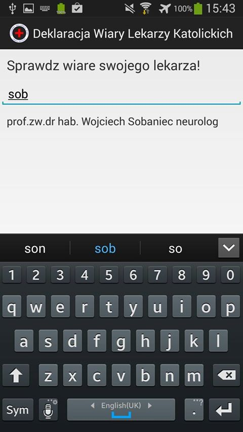

When is a good time to make an app ? How did I do this in such a short time ? How much did I learn ? How much did I earn ?
Cambridge Mobile App Group, 2014.07.15


28 May at ~15:00 "Should I do it ?" 28 May at 14:59: "Do it !" 28 May at 15:09: "Sure!"
28 May at 15:21
28 May at 15:21
28 May at 15:44

Code
List nameList = new ArrayList();
nameList.add("First line");
nameList.add("Second line");
ArrayAdapter dataAdapter = new ArrayAdapter(this, R.layout.name_list, nameList);
ListView listView = (ListView) findViewById(R.id.listViewNames);
listView.setAdapter(dataAdapter);
listView.setTextFilterEnabled(true);
EditText myFilter = (EditText) findViewById(R.id.myFilter);
myFilter.addTextChangedListener(new TextWatcher() {
public void afterTextChanged(Editable s) {}
public void beforeTextChanged(CharSequence s, int start, int count, int after) {}
public void onTextChanged(CharSequence s, int start, int before, int count) {
dataAdapter.getFilter().filter( s.toString() );
} });
28 May at 15:44
28 May at 15:45
"Almost there!"
28 May at 16:05
Working on the app title.. "Sprawdź lekarza"=="Check your doctor" The simpler, the better.
28 May at 16:18
"Your application has been published. It can take several hours until it is available throughout Google Play."
Suddenly.. "500. That's an error. There was an error. Please try again later. That's all we know." Google:"On 28 May 2014, we made some corrections .."
28 May at 18:58
ONLINE!
- Total dev time : ~45 min 15:15-16:00
- Total desc time : ~15 min 16:00-16:18
- Waiting for google: forever 160 min 16:18-18:58
28 May at 18:59 First facebook post.
28 May at 21:17 First article mentioning the app.
29 May at 10:41 2nd most popular radio station in PL:
Other publications mentioning the app:
- 28.05 21:16: http://wiadomosci.gazeta.pl/wiadomosci/1,114883,16053085,Chcesz_wiedziec__czy_twoj_lekarz_podpisal_deklaracje.html
- 29.05 10:03: http://di.com.pl/news/49986,0,Sprawdz_czy_Twoj_lekarz_podpisal_deklaracje_wiary.html
- 29.05 14:20: http://www.komputerswiat.pl/nowosci/aplikacje/2014/22/boisz-sie-lekarza-z-sumieniem---ta-aplikacja-pomoze-go-uniknac.aspx
- 29.05 15:20: http://www.fronda.pl/forum/boisz-sie-lekarza-z-sumieniem,56775.html
- 29.05 19:03: http://softonet.pl/publikacje/aktualnosci/Sklep.Google.Play.i.aplikacja.Sprawdz.lekarza.To.niezupelnie.to.co.myslisz,100
- 29.05: http://wiadomosci.radiozet.pl/Polska/Wiadomosci/Sprawdz-czy-twoj-lekarz-podpisal-deklaracje-wiary
- 29.05: http://ezamosc.pl/index.php?option=com_content&task=view&id=8836&Itemid=44
- 30.05 17:50: http://biznes.pl/wiadomosci/najnowsze/aplikacja-pokaze-czy-lekarz-ma-sumienie,5640075,news-detal.html
- 30.05: http://www.benchmark.pl/aktualnosci/sprawdz-lekarza-aplikacja-deklaracja-wiary.html
- 30.05 : http://www.obserwatorkonstytucyjny.pl/debaty/jak-uniknac-lekarza-z-sumieniem/
- Windows app clone: http://www.windowsphone.com/en-us/store/app/sprawd%C5%BA-lekarza/b65af851-33a6-4faa-bc0f-3974c8a83405
after minutes downloads downloads per minute 1 day 1440 1428 0.99 2 days 2880 2983 1.04 3 days 4320 3705 0.86
Download summary:
- Current installs by user: 3069
- Total installs by user: 6207
- # of ratings 209
- Average rating 4.53
Data summary :
- Most popular doctor spec: family medicine, paediatric, gynaecology
- 65% users used the app once
- 22% users used the app twice
- 40 secs - median time spent using the app
- 30% spends 1-3 mins
Estimated earnings: guess !
Thank you !
- Credits :
- https://github.com/bartaz/impress.js/
- https://code.google.com/p/google-code-prettify/
- http://www.pixeljoint.com/
uk.linkedin.com/in/jakubczaplicki/